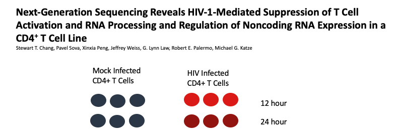
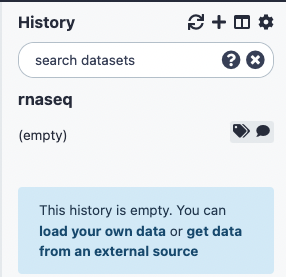
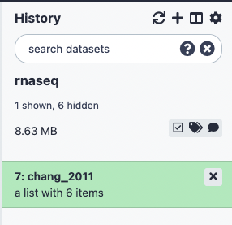
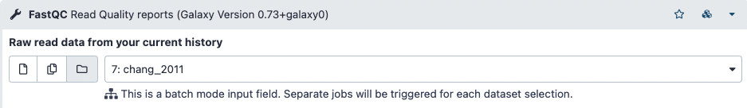
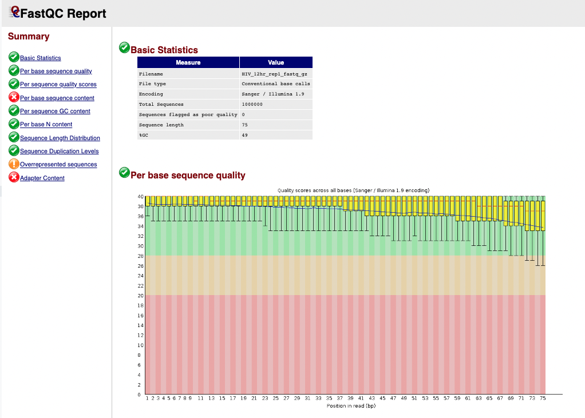
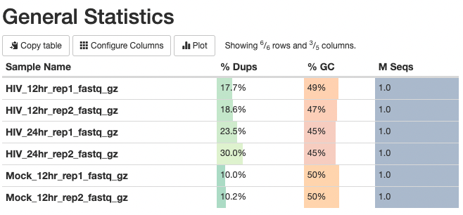
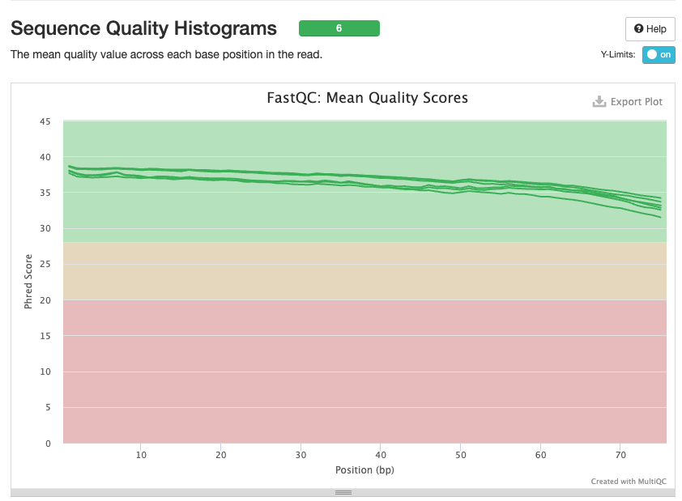

Import Raw Reads from Shared Library
Dataset
Our dataset is from the publication:
The experiment aims to compare the mRNA produced by Mock and HIV infected CD4+ T cells, both 12 hr and 24 hr after infection.

The following steps will walk you through how to run tools needed for our workflow. In each step certain parameters are set. If a parameter option appears on the screen but this tutorial doesn't mention how to set it, leave it at the default. There are questions throughout, which serve to guide you through the results and check your understanding.
Create a new history
- Click the + at the top of the history panel
- To rename the history, click on the box Unnamed History and type rnaseq and press enter

Import the raw data from a shared data library on our server
We'll import The raw reads from a shared library on our server. They have been downsampled to 1 million reads per file in order to speed up computation. The full dataset is available from NCBI under accession SRP013224.
- On the top menu bar, click Shared Data and select Data Libraries
- Click on subsampled_chang_2011 and then select all files in this directory
- Just under the top menu bar, next to the search bar, click Export to History and select As a Collection. You'll see a list of fastq files.
- Click Continue to add all files as a list to our current history (No need to click on individual files)
- Name the collection chang_2011
- Click Create Collection
- Click on Galaxy Tufts on the top left to go back to the main panel.
You’ll see the collection (or list) chang_2011 in your history.

View Fastq files
- Click on the list chang_2011 to expand, you’ll see 6 sequencing files with extension fastq.qz. These are two 12 hr HIV replicates, two 12 hr Mock replicates, and two 24 hour HIV replicate.
- Click on the eye icon on the first sequence file HIV_12hr_rep1 and look at the fastq reads
The first 4 lines constitute the first sequencing read:
@SRR497699.30343179.1 HWI-EAS39X_10175_FC61MK0_4_117_4812_10346 length=75
CAGATGGCCGCAGAGGAAGCCATGAAGGCCCTGCATGGGGAGATCGGAAGAGCGGTTCAGCAGGAATGCCGAGAC
+
IIIIGIIHFIIIIBIIDII>IIDHIIHDIIIGIFIIEIGIBDDEFIG<EIEGEEG;<DB@A8CC7<><C@BBDDB
- Sequence identifier
- Sequence
-
- (optionally lists the sequence identifier again)
- Quality string
Perform Quality Control on Raw Reads
FastQC provides several modules:
- Sequence Quality
- GC content
- Per base sequence content
- Adapters in Sequence
Run FastQC
- In the Tools panel search bar, type FastQC
- Select FastQC under FASTQ Quality Control
- In the Main panel, under Raw read data from your current history select the folder icon and the dataset chang_2011 will appear as an option

- Scroll down and click Execute.The job should first appear orange and then green after a minute or so.
- The result will be two lists, one containing the raw data and one the webpage (html) results for convenient viewing in the browser.

- Click to expand the second list FastQC on collection 7: Webpage and click on the eye icon next to the sample HIV_12hr_rep1. The first table gives Basic Statistics of the sample. The Main panel will show metrics and plots. You may have to adjust the size of the panel in order to view.

Question 1: How many sequences are in the sample HIV_12hr_rep1? What is their average length?
Aggregate QC data with MultiQC
The tool MultiQC allows us to view our QC results from all samples side by sides, in order to check for consistency across replicates. It can use the Raw Data output from FastQC and generate plots for all modules.
Steps to run:
- In the Tools panel search bar, type MultiQC
- Select MultiQC under FASTQ Quality Control
- In the middle panel, under Which tool was used generate logs? select FastQC
- Under FastQC output click Insert FastQC output and select the collection 14: FastQC on collection 7: Raw Data
Note
note that the numbers 14 and 12 are tracking the dataset number in your history and might vary if you have not followed the exact sequence in this document
- Enter the Report Title “Raw data QC”
- Scroll down and click Execute.
- The result will again be two collections (you may have to click "back to rnaseq" on the top of the History panel). Select the collection titled MultiQC on data 21, data 19, and others: Webpage and click the eye icon to view.
The first panel gives summary statistics:

The second figure is a bar graph showing "Sequence Counts" of unique and duplicate reads for each sample. The remaining figures show each FastQC metric, displaying all samples on a single graph. There is a rectangle at the top that summarizes the pass/fail status of samples.

Question 2: Which metrics show one or more failed samples?
Trim adapters and low quality read ends with Trim Galore!
- In the Tools panel search bar, type Trim Galore!
- Select Trim Galore! under FASTQ Quality Control
- Under Is this library paired- or single-end? select "Single-end"
- Under Reads in FASTQ format click the folder icon and select chang_2011
- Scroll down and click Execute.
- The result will be a single collection titled Trim Galore! on collection 12: trimmed reads. Next, we’ll rerun FastQC in order to see how the trimming performed
Rerun FastQC and MultiQC
- Follow the steps for Run FastQC and Aggregate QC data with MultiQC above, except select the trimmed reads generated in the previous step as the input to FastQC
Question 3: Were any reads completely removed from the samples? Note:The MultiQC "General Statistics" tables shows a rounded value, so use the "Sequence Counts" graph.
Question 4: Is the adapter problem solved? What about the GC content? Note: HIV replication is ramping up rapidly in these cells in the first 24 hours.